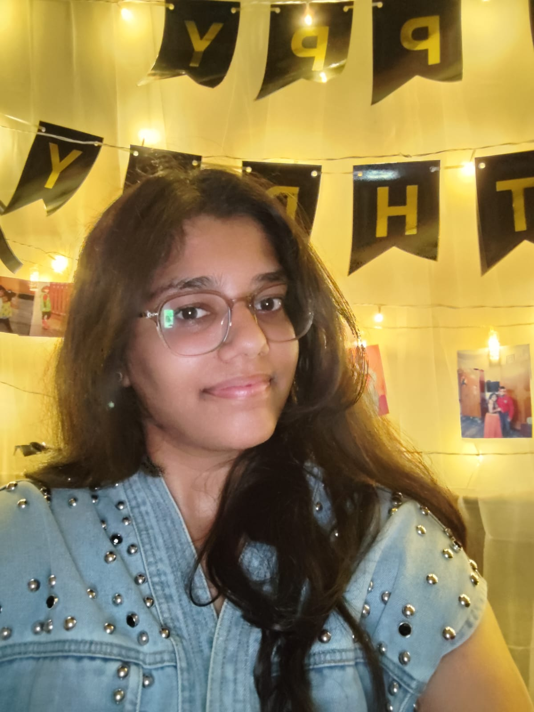

BEHIND THE LEDGER / 004 PEOPLE
Meet the minds
behind the proof.
Four perspectives, one shared promise: make civic action easier to see, easier to trust, and impossible to quietly lose.
CCTEAM
NODE
PEOPLE
04
TRUST
100%
CITY
∞
DESIGN WITH EMPATHY✦BUILD FOR ACCOUNTABILITY✦KEEP THE RECORD OPEN✦DESIGN WITH EMPATHY✦BUILD FOR ACCOUNTABILITY✦KEEP THE RECORD OPEN✦
01 / THE CREW
Different strengths.
One civic signal.
AUTO-ROTATING
01/ 04

FRONTEND / INTERFACELIVE PROFILE ↗
28.6139° N 77.2090° E
01 — FRONTEND DEVELOPER● ONLINE
Bhavya
Aggarwal
Crafting pixel-perfect designs into seamless, responsive web experiences.
FOCUSHuman-first interfaces
KNOWN FORMaking complexity feel simple
CONTRIBUTION SIGNAL100%
“If it feels effortless, we did the hard work right.”
02 / HOW WE WORK
01Stay curious.
Research starts with listening to the people who live with the problem every day.
02Make it legible.
Good technology should explain itself — to citizens, officers, and everyone in between.
03Ship the signal.
Ideas matter when they become useful, reliable tools people can count on.
THE NEXT BLOCK IS YOURS
Trust is a team sport.
See how CivicChain turns a report into a record that the whole city can follow.